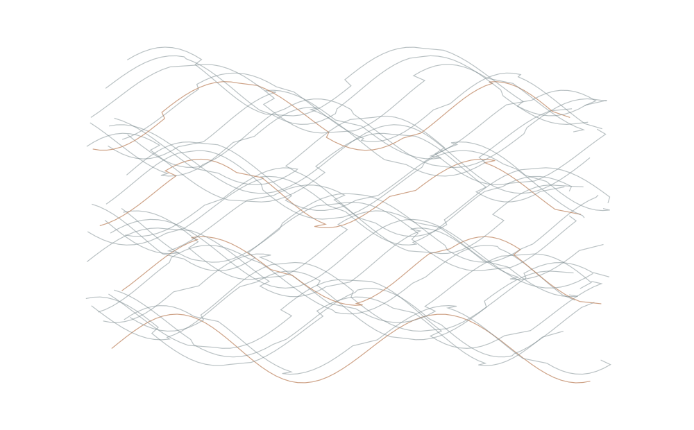
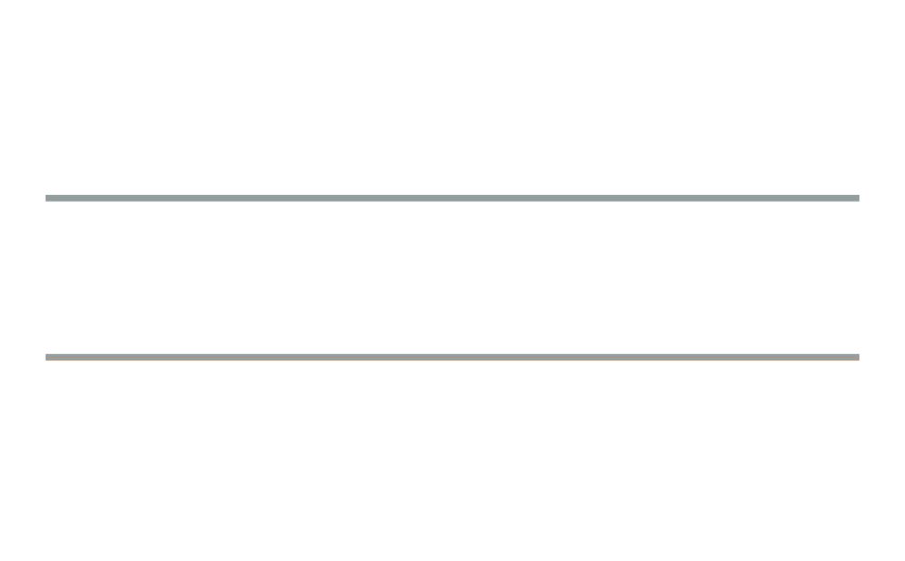
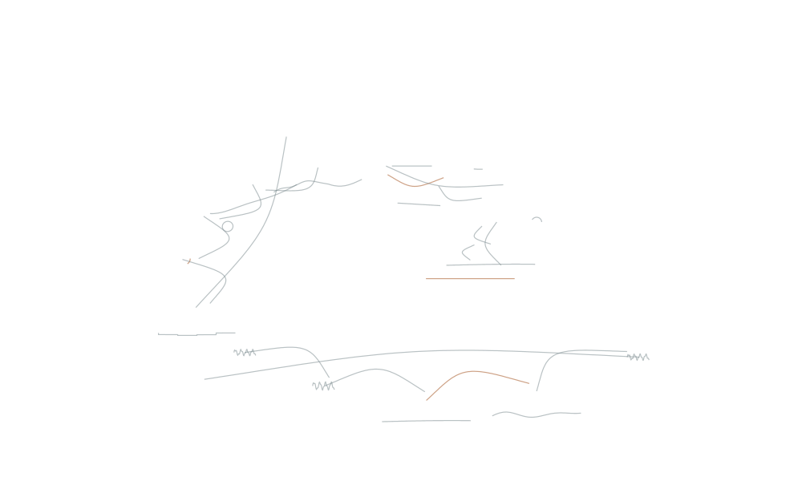
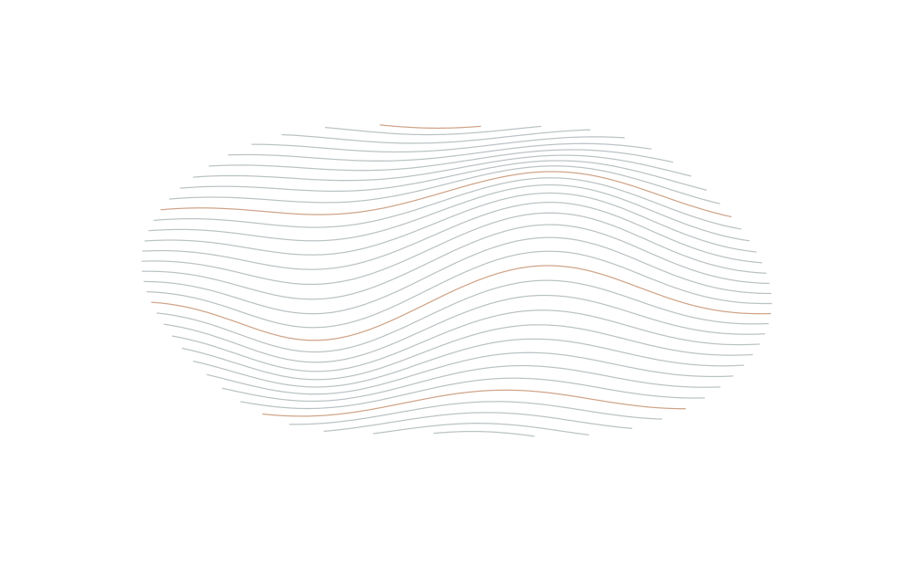
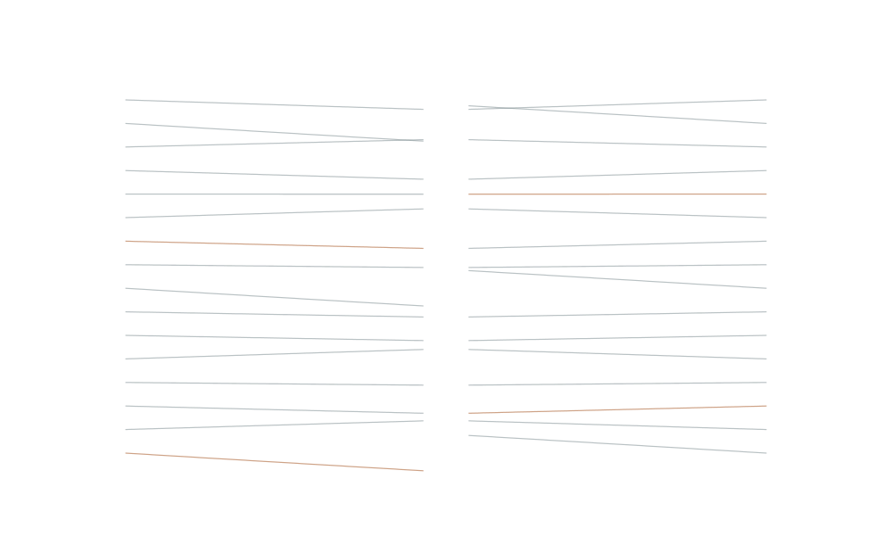
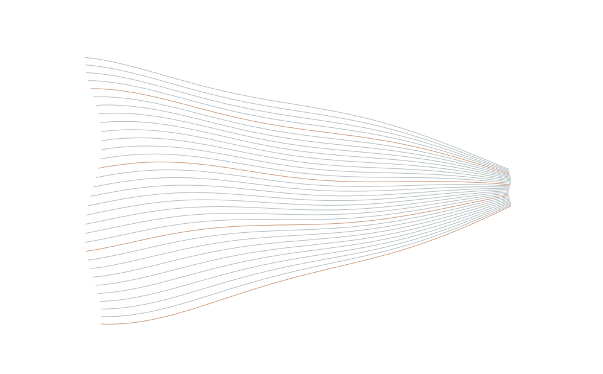
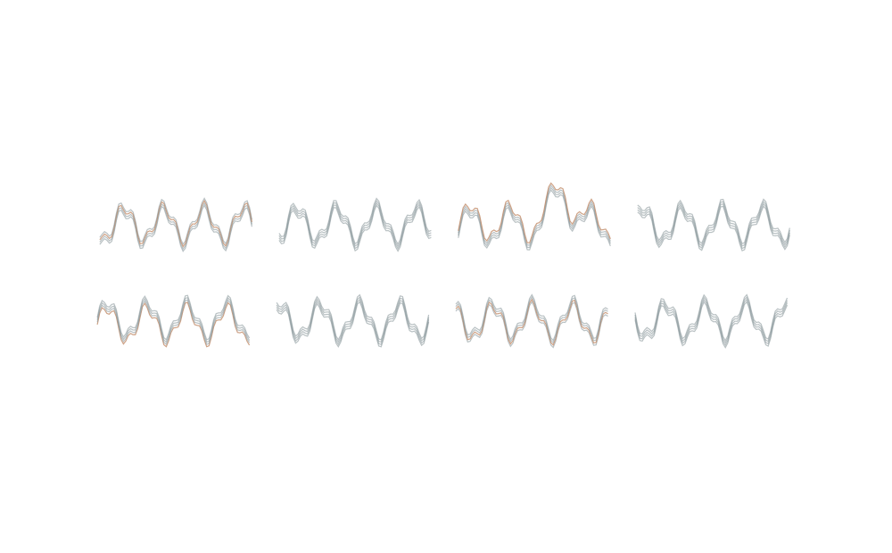
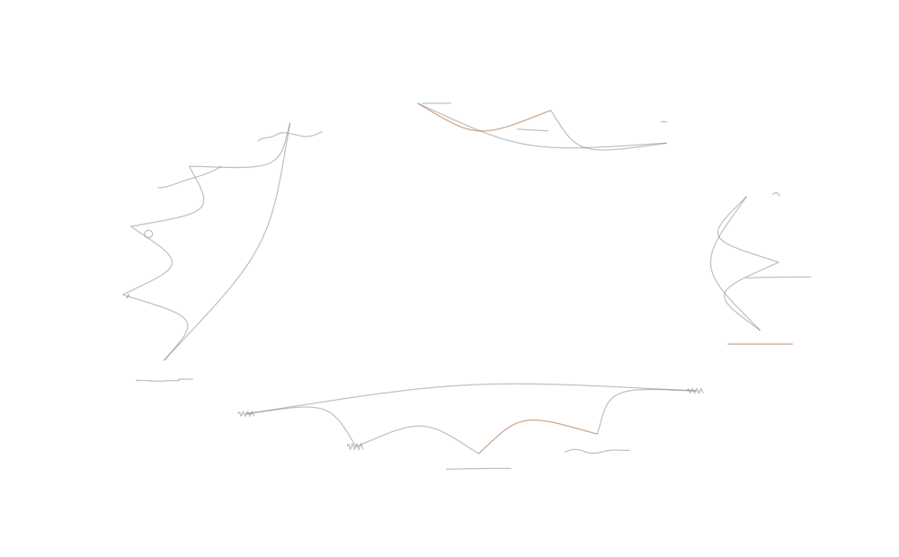

Altus LotViewer
↗Parse lot histories, align timestamps and review wafer states.
Engineering, set in motion.
FOLLOW THE PROCESS↓01 / THE WORK BETWEEN THE WORK
Logs to read. Values to compare.
The same checks, again.

THE WORK CAN CHANGE.
Keep the engineering.
Remove the unnecessary steps.

02 / BUILT ONE PROBLEM AT A TIME
A recurring task becomes software.
The tools begin to belong
together.

03 / OBSERVE
Measurements find their place.
Variation becomes visible.
Reveal spatial non-uniformity with wafer-level contour plots.
Illustration of the workflow. Not a process simulation.

04 / COMPARE
Align what belongs together.
Let the differences stand apart.
Match equivalent recipe steps and reveal parameter differences independently of line order.
Illustration of the workflow. Not a process simulation.

05 / DIAGNOSE
Temperature observations
narrow the possibilities.
Use observed temperature behaviour to guide drift diagnosis and recommendations.
Illustration of the workflow. Not a process simulation.

06 / COORDINATE
Charts, schedules and outputs.
The work comes together.
Explore multiple equipment parameters with interactive SPC analysis.
Illustration of the workflow. Not a process simulation.

07 / THE ARTIFACTS ECOSYSTEM
16 applications. Four original Expeditions.
Choose an instrument.

Years of engineering problems.
A growing collection of
software.
THE COMPLETE ECOSYSTEM
Parse lot histories, align timestamps and review wafer states.
Retrieve ANKO schedules across the Altus workflow.
Aggregate wafer counts from logs for maintenance planning.
Reveal spatial non-uniformity with wafer-level contour plots.
Match equivalent recipe steps and reveal parameter differences independently of line order.
Reach SPC charts directly and open multiple charts without repeated navigation.
Compile metrology data with predefined calculations into consistent reports.
Use observed temperature behaviour to guide drift diagnosis and recommendations.
Compare input temperatures and guide baseplate arrangements.
Map LayTec zones in a shared spatial view.
Compare configuration files and highlight changes in settings and constants.
Review configured GaN SPC charts and their parameter states together.
Review legacy SPC charts and parameter states in one workflow.
Bring ANKO status and due dates into one view for planning.
Compile LayTec information into engineering reports.
Explore multiple equipment parameters with interactive SPC analysis.